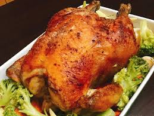

<html>

<head>

<title烤雞</title>

</head>

<body bgcolor="#cccccc">

<body>


<h1>香料烤火雞</h1>
<b>說起感恩節的傳統餐點，少不了經典的烤火雞，用各式香草提香，<br>
雞隻裡填滿豐富的餡料，雞肉吃起來鮮嫩多汁，裡頭的食材吸飽了雞湯精華，更加美味。<p>
對於西方人來說，每個家庭都有祖傳食譜，<br>
訴求家的味道或象徵了傳承。</b>。<p>


 <p>

<iframe width="560" height="315" src="https://www.youtube.com/embed/dpMQPTs7iTE" frameborder="0" allow="accelerometer; autoplay; encrypted-media; gyroscope; picture-in-picture" allowfullscreen></iframe>


<a href="index.html">連到首頁</a>
<a href="03.html">連到第三頁</a>
<a href="04.html">連到第四頁</a>
<a href="05.html">心得</a>
</body>

</html>